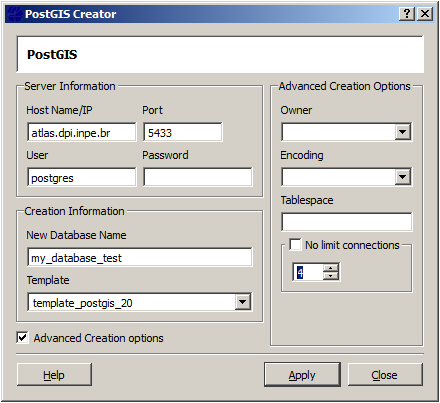

To create a new PostGIS data source it is necessary to inform the Server information (Host, Port, User, Password) and also the Creation Information (New Database Name and the Template used (template_postgis_20). Also there is Advanced Options to change same default parameters, like Owner, Encoding, Tablespace and Limit connections whose default values are Postgres, UTF8, pg_default and 4 respectively.

After that it is necessary to define a new PostGIS connector to this new data source (my_database_test) in order to be able to save data on it. See how to create a PostGIS connector here.